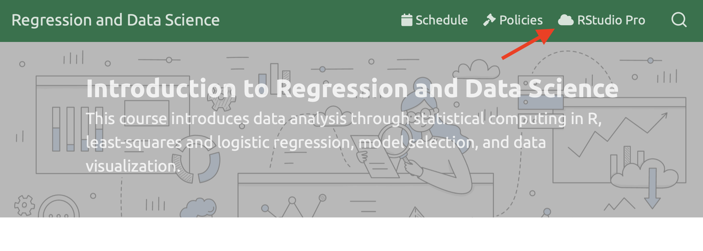

08:00
Meet the toolkit
Dr. D’Agostino McGowan
Agenda
- Demo: Penguin Study
- R and RStudio
- Quarto
A Penguin Study
Recap: What did we just do?
- Create a project in RStudio
- Open a .qmd file in RStudio
- Render the analysis
- Edit the analysis
- Re-render the analysis
Login to RStudio Pro
- Note: if you are off campus, you will need to use a VPN to connect
- Go to https://login.deac.wfu.edu/

RStudio Pro Setup
Step 1: Create a New Project
Click File > New Project
RStudio Pro Setup
Step 2: Click “Version Control”
Click the third option.

RStudio Pro Setup
Step 3: Click Git
Click the first option

RStudio Pro Setup
Step 4: Copy my starter files
Paste this link in the top box (Repository url):
https://github.com/sta-363-f25/appex-01-welcome-penguins.git
Penguin fun!
- Once you log on to RStudio Pro, create a new project from version control (Git)
- Paste
https://github.com/sta-363-f25/appex-01-welcome-penguins.gitin the Repository url box - Find the file pane (on the bottom right). Click the
welcome-penguins.qmdfile - Click the “Render” button
- Go back to the file and change your name on top (in the
yaml– we’ll talk about what this means later) and render again. - Then, scroll to the
plotchunk, below Palmer Penguins. Instead of looking at the relationship between flipper length and bill length, plot the relationship between flipper length and bill depth. Hint, look at the full dataset at the bottom of the document for variable names, update the captions to match your new plot. - Render again & voila!
What is R?
- scripting language
- statistical software
- like a car’s “engine”
What is RStudio?
- IDE (integrated development environment)
- like a car’s “dashboard”
Let’s take a tour – R / RStudio
What did we learn?
- Using the console
- Using R as a calculator
- Environment
- Loading and viewing a data frame
- Creating a Project
R essentials
A short list (for now):
- Functions are (most often) verbs, followed by what they will be applied to in parentheses:
tidyverse

R packages for data science
The tidyverse is an opinionated collection of R packages designed for data science. All packages share an underlying design philosophy, grammar, and data structures.
Quarto
Quarto
- Fully reproducible reports – each time you render the document the analysis is run from the beginning
- Simple markdown syntax for text
- Code goes in chunks, defined by three backticks, narrative goes outside of chunks
Let’s take a tour - Quarto
What did we learn?
- Creating a project
- Creating a
.qmdfile - Rendering documents
- Visual Editor
- The YAML
- Markdown and (some) R syntax
Rendering
Use the  Render button in the RStudio IDE to render the file and preview the output with a single click or keyboard shortcut (⇧⌘K).
Render button in the RStudio IDE to render the file and preview the output with a single click or keyboard shortcut (⇧⌘K).

If you prefer to automatically render whenever you save, you can check the Render on Save option on the editor toolbar.

YAML header
The YAML header starts and ends with three dashes
Code chunks
R code chunks identified with {r} with (optional) chunk options, in YAML style, identified by #| at the beginning of the line.
Would this code chunk be “included” in the final report?
Markdown text
- Quarto uses markdown for formatting text, including section headers, hyperlinks, an embedded image, and an inline code chunk.
- If you use the “visual” editor, you don’t need to learn much of this
Your turn
- Log into RStudio Pro
- Open the project you created in the last class
- Explore the visual editor – try adding some bold text to the document
04:00
Workspaces
Remember this, and expect it to bite you a few times as you’re learning to work with Quarto: The workspace of your Quarto document is separate from the Console!
- Run the following in the console
All looks good, eh?
What happens? Why the error?
How will we use Quarto?
- Every assignment / report / project / etc. is a Quarto document
- You’ll often have a template Quarto document to start with
- The amount of scaffolding in the template will decrease over the semester
- You will turn in the .html file on Canvas
Lab 01
- Lab instructions are posted on the course website under
assignment- Let’s go find today’s!

Slides adapted from datasciencebox.org by Dr. Lucy D’Agostino McGowan